library(tidyverse)
library(fishualize)
library(brms)
library(tidybayes)
library(patchwork)13 Goals, Power, and Sample Size
Researchers collect data in order to achieve a goal. Sometimes the goal is to show that a suspected underlying state of the world is credible; other times the goal is to achieve a minimal degree of precision on whatever trends are observed. Whatever the goal, it can only be probabilistically achieved, as opposed to definitely achieved, because data are replete with random noise that can obscure the underlying state of the world. Statistical power is the probability of achieving the goal of a planned empirical study, if a suspected underlying state of the world is true. (Kruschke, 2015, p. 359, emphasis in the original)
13.1 The will to power
“In this section, [Kruschke laid out a] framework for research and data analysis [that might lead] to a more precise definition of power and how to compute it” (p. 360).
13.1.1 Goals and obstacles
The three research goals Kruschke dealt with in this chapter were:
- to reject a null value for a parameter,
- to confirm the legitimacy of a particular parameter value, and
- to estimate a parameter with reasonable precision.
All these could, of course, be extended to contexts involving multiple parameters and all of these were dealt with using 95% HDIs.
13.1.2 Power
Because of random noise, the goal of a study can be achieved only probabilistically. The probability of achieving the goal, given the hypothetical state of the world and the sampling plan, is called the power of the planned research. In traditional null hypothesis significance testing (NHST), power has only one goal (rejecting the null hypothesis), and there is one conventional sampling plan (stop at predetermined sample size) and the hypothesis is only a single specific value of the parameter. In traditional statistics, that is the definition of power. That definition is generalized in this book to include other goals, other sampling plans, and hypotheses that involve an entire distribution on parameters. (p. 361, emphasis in the original)
Three primary methods to increase power are:
- reducing measurement error,
- increasing the effect size, and
- increasing the sample size.
Kruschke then laid out a five-step procedure to compute power within a Bayesian workflow.
- Use theory/prior information to specify hypothetical distributions for all parameter values in the model.
- Use those distributions to generate synthetic data according to the planned sampling method.
- Fit the proposed model–including the relevant priors–with the synthetic data.
- Use the posterior to determine whether we attained the research goal.
- Repeat the procedure many times (i.e., using different
set.seed()values) to get a distribution of results.
13.1.3 Sample size
The best that a large sample can do is exactly reflect the data-generating distribution. If the data-generating distribution has considerable mass straddling the null value, then the best we can do is get estimates that include and straddle the null value. As a simple example, suppose that we think that a coin may be biased, and the data-generating hypothesis entertains four possible values of \(\theta\), with \(p(\theta = 0.5) = 25 \%\), \(p(\theta = 0.6) = 25 \%\), \(p(\theta = 0.7) = 25 \%\), and \(p(\theta = 0.8) = 25 \%\). Because \(25 \%\) of the simulated data come from a fair coin, the maximum probability of excluding \(\theta = 0.5\), even with a huge sample, is \(75 \%\).
Therefore, when planning the sample size for an experiment, it is crucial to decide what a realistic goal is. If there are good reasons to posit a highly certain data-generating hypothesis, perhaps because of extensive previous results, then a viable goal may be to exclude a null value. On the other hand, if the data-generating hypothesis is somewhat vague, then a more reasonable goal is to attain a desired degree of precision in the posterior. (p. 364, emphasis in the original)
13.1.4 Other expressions of goals
I’m going to skip over these.
In the remainder of the chapter, it will be assumed that the goal of the research is estimation of the parameter values, starting with a viable prior. The resulting posterior distribution is then used to assess whether the goal was achieved. (p. 366)
13.2 Computing power and sample size
As our first worked-out example, consider the simplest case: Data from a single coin. Perhaps we are polling a population and we want to precisely estimate the preferences for candidates A or B. Perhaps we want to know if a drug has more than a 50% cure rate. (p. 366)
13.2.1 When the goal is to exclude a null value
Usually it is more intuitively accessible to get prior data, or to think of idealized prior data, than to directly specify a distribution over parameter values. For example, based on knowledge about the application domain, we might have \(2000\) actual or idealized flips of the coin for which the result showed \(65\%\) heads. Therefore we’ll describe the data-generating hypothesis as a beta distribution with a mode of \(0.65\) and concentration based on \(2000\) flips after a uniform “proto-prior”: \(\operatorname{beta}(\theta \mid 0.65 \cdot (2000 - 2) + 1, (1 - 0.65) \cdot (2000 - 2) + 1)\). (p. 366)
We’ll look at that in a plot in just a moment. First, we load our primary packages for the chapter.
In the last chapter, we settled on a color palette and augmented our global plotting theme with help from the fishualize package. In this chapter we’ll keep with our fish-centric palette approach, this time based on Chaetodon ephippium.
scales::show_col(fish(n = 9, option = "Chaetodon_ephippium"))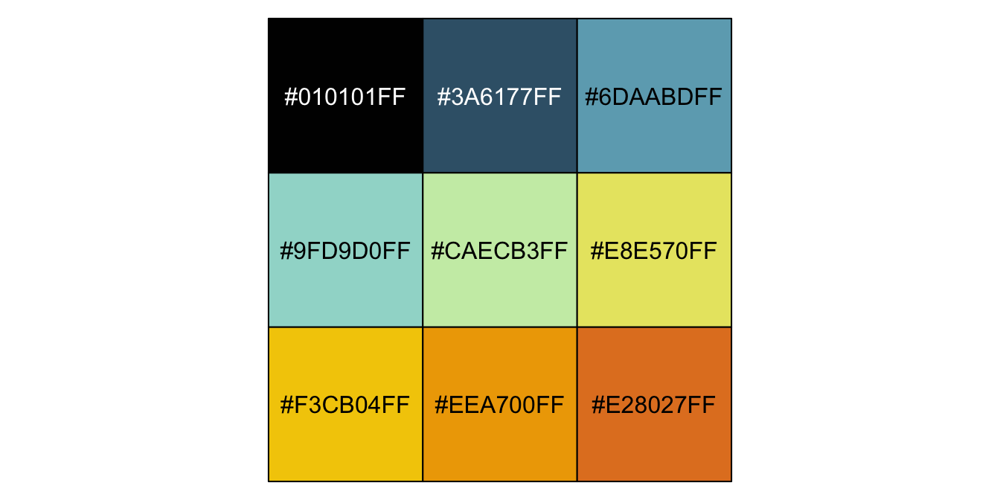
ce <- fish(n = 9, option = "Chaetodon_ephippium")
theme_set(
theme_grey() +
theme(text = element_text(color = ce[1]),
axis.text = element_text(color = ce[1]),
axis.ticks = element_line(color = ce[1]),
legend.background = element_blank(),
legend.box.background = element_blank(),
legend.key = element_rect(fill = ce[5]),
panel.background = element_rect(fill = ce[5], color = ce[4]),
panel.grid = element_blank(),
strip.background = element_rect(fill = ce[1], color = ce[1]),
strip.text = element_text(color = "white"))
)Here’s what \(\operatorname{Beta}(\theta \mid 0.65 \cdot (2{,}000 - 2) + 1, (1 - 0.65) \cdot (2{,}000 - 2) + 1)\) looks like.
kappa <- 2000
omega <- 0.65
tibble(theta = seq(from = 0, to = 1, by = 0.001)) |>
mutate(prior = dbeta(theta,
shape1 = omega * (kappa - 2) + 1,
shape2 = (1 - omega) * (kappa - 2) + 1)) |>
ggplot(aes(x = theta, y = prior)) +
geom_area(fill = ce[3]) +
scale_y_continuous(NULL, breaks = NULL, expand = expansion(mult = c(0, 0.05))) +
labs(x = expression(theta),
subtitle = expression("Behold our Beta"*(1299.7*', '*700.3)*" prior. It's rather peaked"))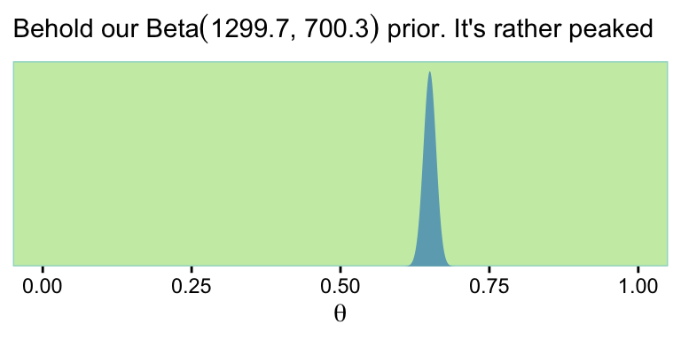
If we wanted to take some random draws from that prior, say 5, we’d do something like this.
n <- 5
set.seed(13)
rbeta(n,
shape1 = omega * (kappa - 2) + 1,
shape2 = (1 - omega) * (kappa - 2) + 1)[1] 0.6430548 0.6532279 0.6250891 0.6475884 0.6351476Now let’s just take one draw and call it bias.
n <- 1
set.seed(13)
bias <- rbeta(n,
shape1 = omega * (kappa - 2) + 1,
shape2 = (1 - omega) * (kappa - 2) + 1)
print(bias)[1] 0.6430548Do note that whereas Kruschke based his discussion on a bias of 0.638, we’re moving forward with our randomly-drawn 0.643. Anyways, now we
simulate flipping a coin with that bias \(N\) times. The simulated data have \(z\) heads and \(N − z\) tails. The proportion of heads, \(z/N\), will tend to be around \([0.643]\), but will be higher or lower because of randomness in the flips. (p. 367)
# Pick some large number
n <- 1e3
set.seed(13)
tibble(flips = rbinom(n = n, size = 1, prob = bias)) |>
summarise(n = n(),
z = sum(flips)) |>
mutate(`proportion of heads` = z / n)# A tibble: 1 × 3
n z `proportion of heads`
<int> <int> <dbl>
1 1000 643 0.643And indeed our samples did tend around \(\theta = 0.643\). Though he presented Table 13.1 in this section, Kruschke walked out how he came to those values in the following sections. We’ll get to them in just a bit.
13.2.2 Formal solution and implementation in R
I’ve been playing around with this a bit. If you look closely at the code block on page 369, you’ll see that Kruschke’s minNforHDIpower() function requires the HDIofICDF() function from his DBDA2E-utilities.R file, which we usually recast as hdi_of_icdf().
hdi_of_icdf <- function(name, width = 0.95, tol = 1e-8, ... ) {
incredible_mass <- 1.0 - width
interval_width <- function(low_tail_prob, name, width, ...) {
name(width + low_tail_prob, ...) - name(low_tail_prob, ...)
}
opt_info <- optimize(interval_width, c(0, incredible_mass),
name = name, width = width,
tol = tol, ...)
hdi_lower_tail_prob <- opt_info$minimum
c(ll = name(hdi_lower_tail_prob, ...),
ul = name(width + hdi_lower_tail_prob, ...))
}Just to warm up, consider a beta distribution for which \(\omega = 0.5\) and \(\kappa = 2{,}000\). Here are the 95% HDIs.
omega <- 0.5
kappa <- 2000
hdi_of_icdf(name = qbeta,
shape1 = omega * (kappa - 2) + 1,
shape2 = (1 - omega) * (kappa - 2) + 1) ll ul
0.4780947 0.5219053 Those look a whole lot like the ROPE values Kruschke specified in his example at the bottom of page 370. But we’re getting ahead of ourselves. Now that we have our hdi_of_icdf() function, we’re ready to define our version of minNforHDIpower(), which I’m calling min_n_for_hdi_power().
min_n_for_hdi_power <- function(
gen_prior_mode, gen_prior_n,
hdi_max_width = NULL, null_value = NULL,
rope = c(max(0, null_value - 0.02), min(1, null_value + 0.02)),
desired_power = 0.8, aud_prior_mode = 0.5, aud_prior_n = 2,
hdi_mass = 0.95, init_samp_size = 20, verbose = TRUE) {
# Check for argument consistency:
if (!xor(is.null(hdi_max_width), is.null(null_value))) {
stop("One and only one of `hdi_max_width` and `null_value` must be specified.")
}
# Convert prior mode and N to a, b parameters of beta distribution:
gen_prior_a <- gen_prior_mode * (gen_prior_n - 2) + 1
gen_prior_b <- (1.0 - gen_prior_mode) * (gen_prior_n - 2) + 1
aud_prior_a <- aud_prior_mode * (aud_prior_n - 2) + 1
aud_prior_b <- (1.0 - aud_prior_mode) * (aud_prior_n - 2) + 1
# Initialize loop for incrementing `sample_size`:
sample_size <- init_samp_size
not_powerful_enough = TRUE
# Increment `sample_size` until desired power is achieved:
while(not_powerful_enough) {
z_vec <- 0:sample_size # vector of all possible z values for N flips.
# Compute probability of each z value for data-generating prior:
p_z_vec <- exp(lchoose(sample_size, z_vec)
+ lbeta(z_vec + gen_prior_a, sample_size - z_vec + gen_prior_b)
- lbeta(gen_prior_a, gen_prior_b))
# For each z value, compute posterior HDI:
# `hdi_matrix` will hold HDI limits for each z:
hdi_matrix <- matrix(0, nrow = length(z_vec), ncol = 2)
for (z_id_x in 1:length(z_vec)) {
z <- z_vec[z_id_x]
hdi_matrix[z_id_x, ] <- hdi_of_icdf(qbeta,
shape1 = z + aud_prior_a,
shape2 = sample_size - z + aud_prior_b,
width = hdi_mass)
}
# Compute HDI widths:
hdi_width <- hdi_matrix[, 2] - hdi_matrix[, 1]
# Sum the probabilities of outcomes with satisfactory HDI widths:
if (!is.null(hdi_max_width)) {
power_hdi <- sum(p_z_vec[hdi_width < hdi_max_width])
}
# Sum the probabilities of outcomes with HDI excluding `rope`:
if (!is.null(null_value)) {
power_hdi <- sum(p_z_vec[hdi_matrix[, 1] > rope[2] | hdi_matrix[, 2] < rope[1]])
}
if (verbose) {
cat(" For sample size = ", sample_size, ", power = ", power_hdi,
"\n", sep = ""); flush.console()
}
if (power_hdi > desired_power) { # If desired power is attained,
not_powerful_enough = FALSE
} else {
sample_size <- sample_size + 1
# Set flag to stop, otherwise increment the sample size.
}
} # End while( not_powerful_enough ).
# Return the sample size that achieved the desired power:
sample_size
}Other than altering Kruschke’s formatting a little bit, the only meaningful change I made to the code was removing the line that checked for the HDIofICD() function and then source()ed it, if necessary. Following along with Kruschke on page 370, here’s an example for which \(\omega_\text{data generating} = 0.75\), \(\kappa = 2{,}000\), the ROPE is \([.48, .52]\), and the desired power is the conventional 0.8.
min_n_for_hdi_power(gen_prior_mode = 0.75,
gen_prior_n = 2000,
hdi_max_width = NULL,
null_value = 0.5,
rope = c(.48, .52),
desired_power = 0.8,
aud_prior_mode = 0.5,
aud_prior_n = 2,
hdi_mass = 0.95,
init_samp_size = 20,
verbose = TRUE) For sample size = 20, power = 0.6159196
For sample size = 21, power = 0.5655352
For sample size = 22, power = 0.6976802
For sample size = 23, power = 0.6521637
For sample size = 24, power = 0.606033
For sample size = 25, power = 0.7245362
For sample size = 26, power = 0.6832871
For sample size = 27, power = 0.7836981
For sample size = 28, power = 0.7479021
For sample size = 29, power = 0.7103786
For sample size = 30, power = 0.8009259[1] 30Just like in the text, the necessary \(N = 30\).
Unlike in the text, I increased the value of init_samp_size from 5 to 20 to keep the output a reasonable length. To clarify what we just did,
in that function call, the data-generating distribution has a mode of \(0.75\) and concentration of \(2000\), which means that the hypothesized world is pretty certain that coins have a bias of \(0.75\). The goal is to exclude a null value of \(0.5\) with a ROPE from \(0.48\) to \(0.52\). The desired power [is] \(80\%\). The audience prior is uniform. When the function is executed, it displays the power for increasing values of sample size, until stopping at \(N = 30\). (p. 370)
If it’s unclear why the “audience prior is uniform”, consider this.
kappa <- 2
omega <- 0.5
tibble(theta = seq(from = 0, to = 1, by = 0.01)) |>
mutate(prior = dbeta(theta,
shape1 = omega * (kappa - 2) + 1,
shape2 = (1 - omega) * (kappa - 2) + 1)) |>
ggplot(aes(x = theta, y = prior)) +
geom_area(fill = ce[3]) +
scale_y_continuous(NULL, breaks = NULL, expand = expansion(mult = c(0, 0.05))) +
coord_cartesian(ylim = c(0, 1.25)) +
labs(x = expression(theta),
title = "Behold the uniform audience prior.")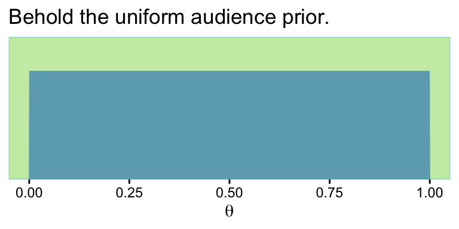
If you work out the algebra with omega and kappa, you’ll see this is a \(\operatorname{Beta}(1, 1)\). Thus, aud_prior_n is \(\kappa\) and aud_prior_mode is \(\omega\).
Here we’ll wrap our min_n_for_hdi_power() function into a simple sim_power() function for use with purrr::map2().
sim_power <- function(mode, power) {
min_n_for_hdi_power(gen_prior_mode = mode,
gen_prior_n = 2000,
hdi_max_width = NULL,
null_value = 0.5,
rope = c(.48, .52),
desired_power = power,
aud_prior_mode = 0.5,
aud_prior_n = 2,
hdi_mass = 0.95,
init_samp_size = 1,
verbose = TRUE)
}Here we use the two functions to compute the values in Table 13.1 on page 367.
sim <- crossing(mode = seq(from = 0.6, to = 0.85, by = 0.05),
power = c(0.7, 0.8, 0.9)) |>
mutate(results = map2_dbl(mode, power, sim_power))The results look like this.
print(sim)# A tibble: 18 × 3
mode power results
<dbl> <dbl> <dbl>
1 0.6 0.7 238
2 0.6 0.8 309
3 0.6 0.9 430
4 0.65 0.7 83
5 0.65 0.8 109
6 0.65 0.9 150
7 0.7 0.7 40
8 0.7 0.8 52
9 0.7 0.9 74
10 0.75 0.7 25
11 0.75 0.8 30
12 0.75 0.9 43
13 0.8 0.7 16
14 0.8 0.8 19
15 0.8 0.9 27
16 0.85 0.7 7
17 0.85 0.8 14
18 0.85 0.9 16It takes just a tiny bit of wrangling to reproduce Table 13.1.
sim |>
pivot_wider(names_from = mode,
values_from = results) |>
knitr::kable()| power | 0.6 | 0.65 | 0.7 | 0.75 | 0.8 | 0.85 |
|---|---|---|---|---|---|---|
| 0.7 | 238 | 83 | 40 | 25 | 16 | 7 |
| 0.8 | 309 | 109 | 52 | 30 | 19 | 14 |
| 0.9 | 430 | 150 | 74 | 43 | 27 | 16 |
13.2.3 When the goal is precision
Recall that if we have \(\operatorname{Beta}(a, b)\) prior for \(\theta\) of the Bernoulli likelihood function, then the analytic solution for the posterior is \(\operatorname{Beta}(\theta \mid z + a, N – z + b)\). In our first example, \(z = 6\) out of \(N = 10\) randomly selected voters preferred candidate A and we started with a flat \(\operatorname{Beta}(\theta \mid 1, 1)\) prior. We can check that our posterior is indeed \(\operatorname{Beta}(7, 5)\) by working through the algebra.
z <- 6
n <- 10
# Posterior alpha
z + 1[1] 7# Posterior beta
n - z + 1[1] 5Here’s how we compute the 95% HDIs.
h <- hdi_of_icdf(name = qbeta,
shape1 = 7,
shape2 = 5)
h ll ul
0.3182322 0.8414276 The \(\operatorname{Beta}(7, 5)\) distribution looks like this.
tibble(theta = seq(from = 0, to = 1, by = 0.01)) |>
mutate(density = dbeta(theta, shape1 = 7, shape2 = 5)) |>
ggplot(aes(x = theta, y = density)) +
geom_area(fill = ce[3]) +
annotate(geom = "segment",
x = h[1], xend = h[2], y = 0.01, yend = 0.01,
color = ce[9], linewidth = 1.2) +
annotate(geom = "text", x = 0.6, y = 1/3,
label = "95% HDI", color = "white") +
scale_x_continuous(NULL, breaks = c(0, h[1], z / n, h[2], 1) |> round(2)) +
scale_y_continuous(NULL, breaks = NULL, expand = expansion(mult = c(0, 0.05))) +
ggtitle(expression("Beta"*(7*", "*5)))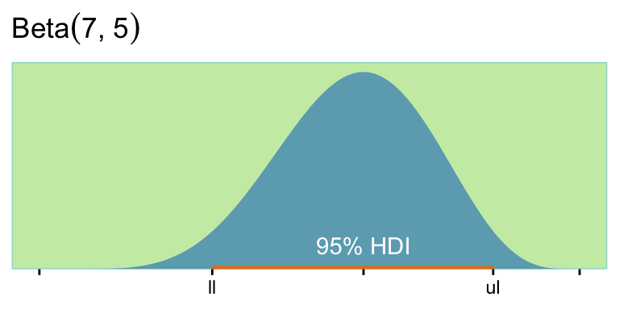
“It turns out, in this case, that we can never have a sample size large enough to achieve the goal of \(80\%\) of the HDIs falling above \(\theta = 0.5\). To see why,” keep reading in the text (p. 371). Happily,
there is a more useful goal, however. Instead of trying to reject a particular value of \(\theta\), we set as our goal a desired degree of precision in the posterior estimate. For example, our goal might be that the \(95\%\) HDI has width less than \(0.2\), at least \(80\%\) of the time. (p. 371)
If you look back up at our min_n_for_hdi_power() defining code, above, you’ll see that “One and only one of hdi_max_width and null_value must be specified.” So if we want to determine the necessary \(N\) for an 95% HDI width of less than .2, we need to set hdi_max_width = 0.2 and null_value = NULL.
min_n_for_hdi_power(gen_prior_mode = 0.75,
gen_prior_n = 10,
hdi_max_width = 0.2, # look here
null_value = NULL,
rope = NULL,
desired_power = 0.8,
aud_prior_mode = 0.5,
aud_prior_n = 2,
hdi_mass = 0.95,
init_samp_size = 75,
verbose = TRUE) For sample size = 75, power = 0.5089359
For sample size = 76, power = 0.5337822
For sample size = 77, power = 0.5235513
For sample size = 78, power = 0.5474934
For sample size = 79, power = 0.5706373
For sample size = 80, power = 0.5929882
For sample size = 81, power = 0.6145578
For sample size = 82, power = 0.6353626
For sample size = 83, power = 0.6554231
For sample size = 84, power = 0.6747629
For sample size = 85, power = 0.6934076
For sample size = 86, power = 0.7113842
For sample size = 87, power = 0.7287209
For sample size = 88, power = 0.7716517
For sample size = 89, power = 0.787177
For sample size = 90, power = 0.8266938[1] 90Just like in the last section, here I set init_samp_size to a higher value than in the text in order to keep the output reasonably short. To reproduce the results in Table 13.2, we’ll need to adjust the min_n_for_hdi_power() parameters within our sim_power() function.
sim_power <- function(mode, power) {
min_n_for_hdi_power(gen_prior_mode = mode,
gen_prior_n = 10,
hdi_max_width = 0.2,
null_value = NULL,
rope = NULL,
desired_power = power,
aud_prior_mode = 0.5,
aud_prior_n = 2,
hdi_mass = 0.95,
init_samp_size = 50,
verbose = TRUE)
}
sim <- crossing(mode = seq(from = 0.6, to = 0.85, by = 0.05),
power = c(0.7, 0.8, 0.9)) |>
mutate(results = map2_dbl(.x = mode, .y = power, .f = sim_power))Let’s make that table.
sim |>
pivot_wider(names_from = mode,
values_from = results) |>
knitr::kable()| power | 0.6 | 0.65 | 0.7 | 0.75 | 0.8 | 0.85 |
|---|---|---|---|---|---|---|
| 0.7 | 91 | 90 | 88 | 86 | 81 | 75 |
| 0.8 | 92 | 92 | 91 | 90 | 87 | 82 |
| 0.9 | 93 | 93 | 93 | 92 | 91 | 89 |
What did that audience prior look like?
kappa <- 2; omega <- 0.5
tibble(theta = seq(from = 0, to = 1, by = 0.1)) |>
mutate(density = dbeta(theta,
shape1 = omega * (kappa - 2) + 1,
shape2 = (1 - omega) * (kappa - 2) + 1)) |>
ggplot(aes(x = theta, y = density)) +
geom_area(fill = ce[3]) +
scale_y_continuous(NULL, breaks = NULL, expand = expansion(mult = c(0, 0.05))) +
labs(x = expression(theta),
title = "Behold the uniform audience prior.")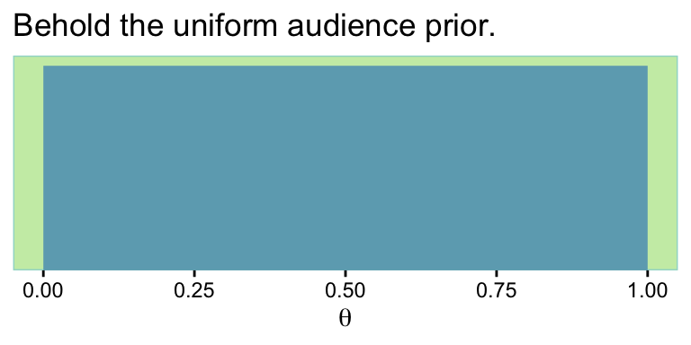
Here are what the beta distributions based on the sim look like.
sim |>
rename(n = results) |>
expand_grid(theta = seq(from = 0, to = 1, by = 0.01)) |>
mutate(density = dbeta(theta,
shape1 = mode * (n - 2) + 1,
shape2 = (1 - mode) * (n - 2) + 1),
mode = str_c("omega == ", mode)) |>
ggplot(aes(x = theta, y = density)) +
geom_vline(xintercept = 0.5, color = ce[8]) +
geom_area(fill = ce[3]) +
scale_x_continuous(expression(theta), labels = c("0", "", ".5", "", "1")) +
scale_y_continuous(NULL, breaks = NULL, expand = expansion(mult = c(0, 0.05))) +
ggtitle("The power and mode values are in the rows and columns, respectively.") +
facet_grid(power ~ mode, labeller = label_parsed)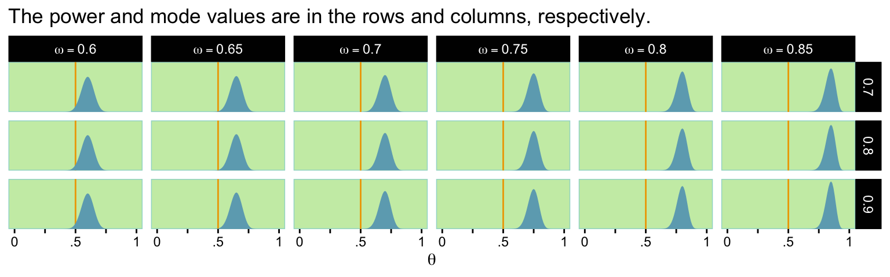
Toward the end of the section, Kruschke mentioned the required sample size shoots up if our desired HDI width is 0.1. Here’s the simulation.
sim_power <- function(mode, power) {
min_n_for_hdi_power(gen_prior_mode = mode,
gen_prior_n = 10,
hdi_max_width = 0.1,
null_value = NULL,
rope = NULL,
desired_power = power,
aud_prior_mode = 0.5,
aud_prior_n = 2,
hdi_mass = 0.95,
init_samp_size = 300, # save some time and up this parameter
verbose = TRUE)
}
sim <- crossing(mode = seq(from = 0.6, to = 0.85, by = 0.05),
power = c(0.7, 0.8, 0.9)) |>
mutate(results = map2_dbl(mode, power, sim_power))Display the results in a table like before.
sim |> pivot_wider(names_from = mode,
values_from = results) |>
knitr::kable()| power | 0.6 | 0.65 | 0.7 | 0.75 | 0.8 | 0.85 |
|---|---|---|---|---|---|---|
| 0.7 | 373 | 370 | 364 | 352 | 332 | 303 |
| 0.8 | 378 | 376 | 373 | 367 | 354 | 334 |
| 0.9 | 380 | 380 | 379 | 378 | 373 | 363 |
13.2.4 Monte Carlo approximation of power
The previous sections illustrated the ideas of power and sample size for a simple case in which the power could be computed by mathematical derivation. [If your field is like mine, this will not be the norm for your research projects.] In this section, we approximate the power by Monte Carlo simulation. The R script for this simple case serves as a template for more realistic applications. The R script is named
Jags-Ydich-Xnom1subj-MbernBeta-Power.R, which is the name for the JAGS program for dichotomous data from a single “subject” suffixed with the word “Power.” As you read through the script, presented below, remember that you can find information about any general R command by using the help function in R, as explained in Section 3.3.1 (p. 39). (p. 372)
The code in Kruschke’s Jags-Ydich-Xnom1subj-MbernBeta-Power.R file also makes use of the content in his Jags-Ydich-Xnom1subj-MbernBeta.R file. As is often the case, the code in both is JAGS and base-R centric. We’ll be taking a different approach. I’ll walk you through.
This won’t be of much concern for some of the complex models we’ll be fitting in later chapters. But for simple models like this, a lot of the time you spend waiting for brms::brm() to return your posterior and its summary has to do with compilation time. The issue of compilation goes into technical details I just don’t have the will to go through right now. But if we can avoid or minimize compilation time, it’ll be a boon for our power simulations. As it turns out, we can. The first time we fit our desired model, we have to compile. But once we have that initial fit object in hand, we can reuse it with the update() function, which will allow us to avoid further compilation. So that’s what we’re going to do, here. We’re going to fit the model once and save it.
# How many rows of 0's and 1's should we have in the data?
n <- 74
# Should the values in the data be of single draws (i.e., 1), or summaries?
size <- 1
# What is the population mode for theta we'd like to base this all on?
omega <- 0.7
# Fit that joint
fit13.1 <- brm(
data = tibble(y = rbinom(n, size, omega)),
family = bernoulli(link = identity),
y ~ 1,
prior(beta(1, 1), class = Intercept, lb = 0, ub = 1),
warmup = 1000, iter = 3000, chains = 4, cores = 1,
seed = 13,
file = "fits/fit13.01")You may (or not) recall that we covered how to time an operation in R back in Section 3.7.5. When you’re setting up a Monte Carlo power study, it can be important to use those time-tracking skills to get a sense of how long it takes to fit your models. While I was setting this model up, I experimented with keeping the default cores = 1 or setting my typical cores = 4. As it turns out, with a very simple model like this, cores = 1 was a little faster. If you’re fitting one model, that’s no big deal. But in a situation where you’re fitting 100 or 1,000, you’ll want to make sure you’re fitting them as efficiently as possible.
But anyway, our practice will be to keep all the specifications in fit constant across the simulations. So choose them wisely. If you look deep into the bowels of the Jags-Ydich-Xnom1subj-MbernBeta.R file, you’ll see Kruschke used the flat \(\operatorname{Beta}(1, 1)\) prior, which is where our prior(beta(1, 1), class = Intercept) code came from. This is the audience prior. We aren’t particularly concerned about the data we simulated with the data = tibble(y = rbinom(n, size, omega)) line. The main thing is that they follow the same basic structure our subsequent data will.
To make sure we’re not setting ourselves up to fail, we might make sure the chains look okay.
plot(fit13.1, widths = 2:3)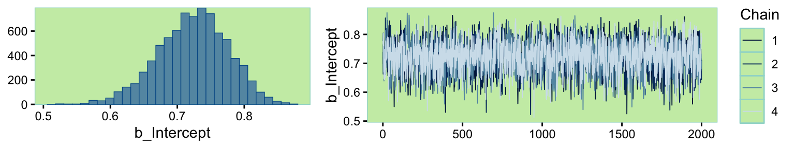
Looks like a dream. Let’s move forward and run the simulation proper. In his script file, Kruschke suggested we simulate with large \(N\)’s like 1,000 or so. Since this is just an example, I’m gonna cut that to 100.
# How many iterations would you like?
n_sim <- 100
# Specify omega and kappa of the hypothetical parameter distribution
omega <- 0.7
kappa <- 2000
# Make it reproducible
set.seed(13)
# Define some of the parameters
sim1 <- tibble(n = n,
size = size,
theta = rbeta(n_sim,
shape1 = omega * (kappa - 2) + 1,
shape2 = (1 - omega) * (kappa - 2) + 1)) |>
# Simulate the data
mutate(data = pmap(.l = list(n, size, theta), .f = rbinom)) |>
# Fit the models on the simulated data
mutate(fit = map(.x = data,
.f = \(data) update(fit13.1, newdata = list(y = data))))What have we done? you might ask.
head(sim1)# A tibble: 6 × 5
n size theta data fit
<dbl> <dbl> <dbl> <list> <list>
1 74 1 0.693 <int [74]> <brmsfit>
2 74 1 0.703 <int [74]> <brmsfit>
3 74 1 0.676 <int [74]> <brmsfit>
4 74 1 0.698 <int [74]> <brmsfit>
5 74 1 0.686 <int [74]> <brmsfit>
6 74 1 0.695 <int [74]> <brmsfit>The theta column contains the draws from the hypothesized parameter distribution, which we’ve indicated is hovering tightly around 0.7. The data column is nested inthe sense that within each row, we’ve saved an entire \(N = 74\) row tibble. Most importantly, the fit column contains the brms::brm() objects for each of our 100 simulations. See that last mutate() line, above? That’s where those came from. Within the purrr::map() function, we fed our simulated data sets, one row at a time, into the update() function via the newdata argument. Because we used update() based on our initial fit, we avoided subsequent compilation times and just sampled like a boss.
Before we move on, I should give some credit. The foundations of this workflow come from Wickham’s talk, Managing many models with R. I got some additional help on twitter from Phil Straforelli.
We still have some work to do. Next, we’ll want to make a custom function that will make it easy to compute the intercept HDIs for each of our fits.
get_hdi <- function(fit) {
fit |>
as_draws_df() |>
# Returns the highest-density *continuous* interval
mode_hdci(b_Intercept) |>
select(.lower:.upper)
}
# How does it work?
get_hdi(fit13.1)# A tibble: 1 × 2
.lower .upper
<dbl> <dbl>
1 0.619 0.823Now we’ll apply that function to our fits tibble to pull those simulated HDIs. Then we’ll program in the markers for the ROPE and HDI width criteria, perform logical tests to see whether they were passed within each of the 100 simulations, and summarize the tests.
sim1 |>
# Get those HDIs and `unnest()`
mutate(hdi = map(.x = fit, .f = get_hdi)) |>
unnest(hdi) |>
# Define our test criteria
mutate(rope_ll = 0.48,
rope_ul = 0.52,
hdi_width = 0.2) |>
mutate(pass_rope = .lower > rope_ul | .upper < rope_ll,
pass_width = (.upper - .lower) < hdi_width) |>
# Summarize
summarise(power_rope = mean(pass_rope),
power_width = mean(pass_width))# A tibble: 1 × 2
power_rope power_width
<dbl> <dbl>
1 0.92 0.34Those are our power estimates. To compute their HDIs, just increase them by a factor of 100 and plug them into the formulas within the shape arguments in hdi_of_icdf().
# HDIs for the ROPE power estimate
hdi_of_icdf(name = qbeta,
shape1 = 1 + 91,
shape2 = 1 + n_sim - 91) |>
round(digits = 2) ll ul
0.84 0.96 # HDIs for the width power estimate
hdi_of_icdf(name = qbeta,
shape1 = 1 + 39,
shape2 = 1 + n_sim - 39) |>
round(digits = 2) ll ul
0.30 0.49 Following the middle of page 375, we’ll want to do the whole thing again with \(\kappa = 10\) and \(N = 91\).
Before we run the next simulation, notice how our first approach had us saving the model fits within our sim1 object. When the models are simple and based on small data and when you’re only simulating 100 times, this isn’t a huge deal. But saving 1,000+ brms::brm() fit objects of hierarchical models will bog you down. So for our next simulation, we’ll only save the HDIs from our get_hdi() function.
# How many rows of 0s and 1s should we have in the data?
n <- 91
# How many simulations would you like?
n_sim <- 100
# Specify omega and kappa of the hypothetical parameter distribution
omega <- 0.7
kappa <- 10
# Make it reproducible
set.seed(13)
# Simulate
sim2 <- tibble(n = n,
size = size,
theta = rbeta(n_sim,
shape1 = omega * (kappa - 2) + 1,
shape2 = (1 - omega) * (kappa - 2) + 1)) |>
mutate(data = pmap(.l = list(n, size, theta), .f = rbinom)) |>
mutate(hdi = map(.x = data, .f = \(data) update(fit13.1, newdata = list(y = data)) |> get_hdi()))Since we saved the HDI estimates in the hdi column, we can just unnest() them and summarize our power results.
sim2 |>
unnest(hdi) |>
mutate(rope_ll = 0.48,
rope_ul = 0.52,
hdi_width = 0.2) |>
mutate(pass_rope = .lower > rope_ul | .upper < rope_ll,
pass_width = (.upper - .lower) < hdi_width) |>
summarise(power_rope = mean(pass_rope),
power_width = mean(pass_width))# A tibble: 1 × 2
power_rope power_width
<dbl> <dbl>
1 0.71 0.92Compute the corresponding HDIs.
# HDIs for the ROPE power estimate
hdi_of_icdf(name = qbeta,
shape1 = 1 + 71,
shape2 = 1 + n_sim - 71) |>
round(digits = 2) ll ul
0.62 0.79 # HDIs for the width power estimate
hdi_of_icdf(name = qbeta,
shape1 = 1 + 92,
shape2 = 1 + n_sim - 92) |>
round(digits = 2) ll ul
0.86 0.96 In general, the [workflow] presented here can be used as a template for power calculations of complex models. Much of the [workflow] remains the same. The most challenging part for complex models is generating the simulated data… Generating simulated data is challenging from a programming perspective merely to get all the details right; patience and perseverance will pay off. (p. 375)
13.2.5 Power from idealized or actual data
In practice, it is often more intuitive to specify actual or idealized data that express the hypothesis, than it is to specify top-level parameter properties. The idea is that we start with the actual or idealized data and then use Bayes’ rule to generate the corresponding distribution on parameter values. (p. 376, emphasis in the original)
Here are the idealized parameters Kruschke outlined on pages 377–378.
# Specify idealized hypothesis:
ideal_group_mean <- 0.65
ideal_group_sd <- 0.07
ideal_n_subj <- 100 # More subjects => higher confidence in hypothesis
ideal_n_trl_per_subj <- 100 # More trials => higher confidence in hypothesisThese parameters are for binomial data. To parameterize \(\theta\) in terms of a mean and standard deviation, we need to define the beta_ab_from_mean_sd() function.
beta_ab_from_mean_sd <- function(mean, sd) {
if (mean <= 0 | mean >= 1) stop("Must have 0 < `mean` < 1")
if (sd <= 0) stop("`sd` must be > 0")
kappa <- mean * (1 - mean) / sd^2 - 1
if (kappa <= 0) stop("Invalid combination of `mean` and `sd`")
a <- mean * kappa
b <- (1.0 - mean) * kappa
list(a = a, b = b)
}Now generate data consistent with these values using a tidyverse-style workflow.
b <- beta_ab_from_mean_sd(ideal_group_mean, ideal_group_sd)
# Make the results reproducible
set.seed(13)
# Make a subject index and generate random theta values for idealized subjects
d <- tibble(s = 1:ideal_n_subj,
theta = rbeta(ideal_n_subj, b$a, b$b)) |>
# Transform the `theta` values to exactly match idealized mean and SD
mutate(theta_transformed = ((theta - mean(theta)) / sd(theta)) * ideal_group_sd + ideal_group_mean) |>
# `theta_transformed` must be between 0 and 1
mutate(theta_transformed = ifelse(theta_transformed >= 0.999, 0.999,
ifelse(theta_transformed <= 0.001, 0.001,
theta_transformed))) |>
# Generate idealized data very close to thetas
mutate(z = round(theta_transformed * ideal_n_trl_per_subj)) |>
# Create vector of 0's and 1's matching the z values generated above
mutate(y = map(.x = z, .f = \(z) rep(1:0, times = c(z, ideal_n_trl_per_subj - z)))) |>
unnest(y)Our main variables are s and y. You can think of the rest as showing our work. Here’s a peek.
str(d)tibble [10,000 × 5] (S3: tbl_df/tbl/data.frame)
$ s : int [1:10000] 1 1 1 1 1 1 1 1 1 1 ...
$ theta : num [1:10000] 0.604 0.604 0.604 0.604 0.604 ...
$ theta_transformed: num [1:10000] 0.601 0.601 0.601 0.601 0.601 ...
$ z : num [1:10000] 60 60 60 60 60 60 60 60 60 60 ...
$ y : int [1:10000] 1 1 1 1 1 1 1 1 1 1 ...We are going to follow the same procedure we did when we originally fit the model to the therapeutic touch data in Chapter 9. Instead of reproducing the model Kruschke presented in his scripts, we are going to fit a hierarchical logistic regression model.
fit13.2 <- brm(
data = d,
family = bernoulli(link = logit),
y ~ 1 + (1 | s),
prior = c(prior(normal(0, 1.5), class = Intercept),
prior(normal(0, 1), class = sd)),
iter = 2000, warmup = 1000, chains = 4, cores = 4,
seed = 13,
file = "fits/fit13.02")Unlike in the text, we had no need for thinning our chains. Our effective sample size estimates were fine.
print(fit13.2) Family: bernoulli
Links: mu = logit
Formula: y ~ 1 + (1 | s)
Data: d (Number of observations: 10000)
Draws: 4 chains, each with iter = 2000; warmup = 1000; thin = 1;
total post-warmup draws = 4000
Multilevel Hyperparameters:
~s (Number of levels: 100)
Estimate Est.Error l-95% CI u-95% CI Rhat Bulk_ESS Tail_ESS
sd(Intercept) 0.23 0.03 0.17 0.29 1.00 1724 2274
Regression Coefficients:
Estimate Est.Error l-95% CI u-95% CI Rhat Bulk_ESS Tail_ESS
Intercept 0.63 0.03 0.57 0.69 1.00 3800 3196
Draws were sampled using sampling(NUTS). For each parameter, Bulk_ESS
and Tail_ESS are effective sample size measures, and Rhat is the potential
scale reduction factor on split chains (at convergence, Rhat = 1).Here’s a look at our two main parameters, our version of the top panels of Figure 13.3.
as_draws_df(fit13.2) |>
pivot_longer(cols = b_Intercept:sd_s__Intercept) |>
ggplot(aes(x = value)) +
stat_histinterval(point_interval = mode_hdi, .width = 0.95,
breaks = 40, color = ce[9], fill = ce[3],
normalize = "panels") +
scale_y_continuous(NULL, breaks = NULL) +
labs(x = NULL,
subtitle = "Remember, these are in the log-odds metric.") +
facet_wrap(~ name, scales = "free")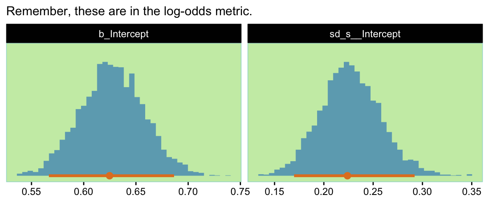
Now we have a distribution of parameter values consistent with our idealized hypothesis, but we did not have to figure out the top-level constants in the model. We merely specified the idealized tendencies in the data and expressed our confidence by its amount… So we now have a large set of representative parameter values for conducting a power analysis. (pp. 378–379)
With brms, you can sample from those model-implied parameter values with the fitted() function. By default, it will return values in the probability metric for our logistic model. Here we’ll specify a group-level (i.e., s) value that was not in the data. We’ll feed that new value into the newdata argument and set allow_new_levels = TRUE. We’ll also set summary = F, which will return actual probability values rather than a summary.
set.seed(13)
f <- fitted(fit13.2,
newdata = tibble(s = 0),
allow_new_levels = TRUE,
summary = FALSE) |>
data.frame() |>
set_names("theta")
str(f)'data.frame': 4000 obs. of 1 variable:
$ theta: num 0.66 0.538 0.645 0.666 0.536 ...Here’s what that looks like.
f |>
ggplot(aes(x = theta)) +
stat_histinterval(point_interval = mode_hdi, .width = 0.95,
breaks = 20, color = ce[9], fill = ce[3]) +
scale_y_continuous(NULL, breaks = NULL) +
labs(x = expression(theta),
subtitle = "Behold our \"distribution of parameter values consistent\nwith our idealized hypothesis.\"") +
xlim(0, 1)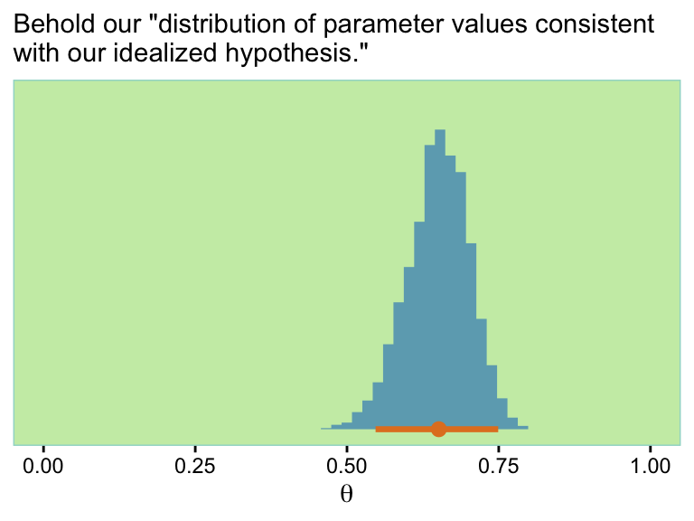
We can make a custom function to sample from \(\theta\). We might call it sample_theta().
sample_theta <- function(seed, n_subj) {
set.seed(seed)
bind_cols(s = 1:n_subj,
sample_n(f, size = n_subj, replace = TRUE))
}
# Take it for a spin
sample_theta(seed = 13, n_subj = 5) s theta
1 1 0.6498557
2 2 0.5274646
3 3 0.6657181
4 4 0.5988945
5 5 0.6192736Now let’s say I wanted to use our little sample_theta() function to sample \(\theta\) values for three people s and then use those \(\theta\) values to sample three draws from the corresponding Bernoulli distribution. We might do that like this.
sample_theta(seed = 13, n_subj = 3) |>
mutate(y = map(theta, rbinom, n = 3, size = 1)) |>
unnest(y)# A tibble: 9 × 3
s theta y
<int> <dbl> <int>
1 1 0.650 1
2 1 0.650 0
3 1 0.650 1
4 2 0.527 0
5 2 0.527 0
6 2 0.527 0
7 3 0.666 1
8 3 0.666 1
9 3 0.666 0Notice how after we sampled from \(\theta\), we still needed to take two more steps to simulate the desired data. So perhaps a better approach would be to wrap all those steps into one function and call it something like sample_data().
sample_data <- function(seed, n_subj, n_trial) {
set.seed(seed)
bind_cols(s = 1:n_subj,
sample_n(f, size = n_subj, replace = TRUE)) |>
mutate(y = map(theta, rbinom, n = n_trial, size = 1)) |>
unnest(y)
}
# Test it out
sample_data(seed = 13, n_subj = 3, n_trial = 3) # A tibble: 9 × 3
s theta y
<int> <dbl> <int>
1 1 0.650 1
2 1 0.650 0
3 1 0.650 1
4 2 0.527 0
5 2 0.527 0
6 2 0.527 0
7 3 0.666 1
8 3 0.666 1
9 3 0.666 0Here’s how we’d use our sample_data() function to make several data sets within the context of a nested tibble.
tibble(seed = 1:4) |>
mutate(data = map(seed, sample_data, n_subj = 14, n_trial = 47))# A tibble: 4 × 2
seed data
<int> <list>
1 1 <tibble [658 × 3]>
2 2 <tibble [658 × 3]>
3 3 <tibble [658 × 3]>
4 4 <tibble [658 × 3]>With this data type, Kruschke indicated he ran
the power analysis twice, using different selections of subjects and trials. In both cases there [was] a total of \(658\) trials, but in the first case there [were] \(14\) subjects with \(47\) trials per subject, and in the second case there [were] seven subjects with \(94\) trials per subject. (p. 381)
Before running the simulations in full, we fit the model once and save that fit to iteratively reuse with update().
# How many subjects should we have?
n_subj <- 14
# How many trials should we have?
n <- 47
# Fit the model
fit13.3 <- brm(
data = sample_theta(seed = 13, n_subj = 14) |>
mutate(y = map(.x = theta, .f = \(theta) rbinom(n = n, size = 1, prob = theta))) |>
unnest(y),
family = bernoulli(link = logit),
y ~ 1 + (1 | s),
prior = c(prior(normal(0, 1.5), class = Intercept),
prior(normal(0, 1), class = sd)),
iter = 2000, warmup = 1000, chains = 4, cores = 4,
seed = 13,
file = "fits/fit13.03")Check real quick to make sure the fit turned out okay.
print(fit13.3) Family: bernoulli
Links: mu = logit
Formula: y ~ 1 + (1 | s)
Data: unnest(mutate(sample_theta(seed = 13, n_subj = 14) (Number of observations: 658)
Draws: 4 chains, each with iter = 2000; warmup = 1000; thin = 1;
total post-warmup draws = 4000
Multilevel Hyperparameters:
~s (Number of levels: 14)
Estimate Est.Error l-95% CI u-95% CI Rhat Bulk_ESS Tail_ESS
sd(Intercept) 0.18 0.12 0.01 0.45 1.00 1186 2051
Regression Coefficients:
Estimate Est.Error l-95% CI u-95% CI Rhat Bulk_ESS Tail_ESS
Intercept 0.64 0.10 0.43 0.84 1.00 3058 2337
Draws were sampled using sampling(NUTS). For each parameter, Bulk_ESS
and Tail_ESS are effective sample size measures, and Rhat is the potential
scale reduction factor on split chains (at convergence, Rhat = 1).Looks fine. Our new model simulation carries with it some new goals.
In this example, [Kruschke] considered goals for achieving precision and exceeding a ROPE around the null value, at both the group level and individual level. For the group level, the goals are for the \(95\%\) HDI on the group mode, \(\omega\), to fall above the ROPE around the null value, and for the width of the HDI to be less than \(0.2\). For the individual level, the goals are for at least one of the \(\theta_s\)s \(95\%\) HDIs to exceed the ROPE with none that fall below the ROPE, and for all the \(\theta_s\)s \(95\%\) HDIs to have widths less than \(0.2\). (pp. 379–380)
Now since we used an aggregated binomial model, we don’t have a population-level \(\omega\) parameter. Rather, we have a population \(\theta\). So like before, our first goal is for the population \(\theta\) to fall above the range \([0.48, 0.52]\). The second corresponding width goal is also like before; we want \(\theta\) to have a width of less than 0.2. But since our aggregated binomial model parameterized \(\theta\) in the log-odds metric, we’ll have to update our get_hdi() function, which we’ll strategically rename get_theta_hdi().
get_theta_hdi <- function(fit) {
fit |>
as_draws_df() |>
transmute(theta = plogis(b_Intercept)) |>
# Returns the highest-density *continuous* interval
mode_hdci() |>
select(.lower:.upper)
}
# How does it work?
get_theta_hdi(fit13.3)# A tibble: 1 × 2
.lower .upper
<dbl> <dbl>
1 0.606 0.698As for the individual-level goals, the two Kruschke outlined in the text apply to our model in a straightforward way. But we will need one more custom function designed to pull the \(\theta_s\)’s for the \(\theta_s\)’s. Let’s call this one get_theta_s_hdi().
get_theta_s_hdi <- function(fit) {
n_col <- coef(fit, summary = FALSE)$s[, , "Intercept"] |>
ncol()
coef(fit, summary = FALSE)$s[, , "Intercept"] |>
data.frame() |>
set_names(1:n_col) |>
mutate_all(.funs = plogis) |>
pivot_longer(cols = everything(), names_to = "s") |>
mutate(s = as.numeric(s)) |>
group_by(s) |>
# Returns the highest-density *continuous* interval
mode_hdci(value) |>
select(s, .lower:.upper) |>
rename(.lower_s = .lower,
.upper_s = .upper)
}
# How does it work?
get_theta_s_hdi(fit13.3)# A tibble: 14 × 3
s .lower_s .upper_s
<dbl> <dbl> <dbl>
1 1 0.601 0.769
2 2 0.542 0.702
3 3 0.585 0.742
4 4 0.515 0.704
5 5 0.553 0.717
6 6 0.602 0.764
7 7 0.580 0.737
8 8 0.585 0.743
9 9 0.553 0.712
10 10 0.573 0.735
11 11 0.584 0.738
12 12 0.538 0.706
13 13 0.593 0.750
14 14 0.583 0.739With sim2, we avoided saving our model brms::brm() fit objects by using the line:
mutate(hdi = map(.x = data, .f = \(data) update(fit13.1, newdata = list(y = data)) |> get_hdi()))
That is, within the purrr::map() function, we first used update() to update the fit to the new data and then pumped that directly into get_hdi(), which simply returned our intervals. Though slick, this approach won’t work here because we want to pump our updated model fit into two functions, both get_theta_hdi() and get_theta_s_hdi(). Our work-around will be to make a custom function that updates the fit, saves it as an object, inserts that fit object into both get_theta_hdi() and get_theta_s_hdi(), binds their results together, and the only returns the intervals. We’ll call this function fit_then_hdis().
fit_then_hdis <- function(data, seed) {
fit <- update(fit13.3,
newdata = data,
seed = seed)
cbind(get_theta_hdi(fit),
get_theta_s_hdi(fit))
}Now we’re ready to simulate.
# How many subjects should we have?
n_subj <- 14
# How many trials should we have?
n_trial <- 47
# How many simulations would you like?
n_sim <- 100
sim3 <- tibble(seed = 1:n_sim) |>
mutate(data = map(.x = seed, .f = \(seed) sample_data(seed = seed, n_subj = n_subj, n_trial = n_trial))) |>
mutate(hdi = map2(.x = data, .y = seed, .f = fit_then_hdis))If we hold these by the criteria of each \(\text{HDI}_{\theta_s} > \text{ROPE}\) and all to have widths less than 0.2, It looks like our initial data-generating fit13.3 is in the ballpark. Here are the results for the full power analysis, sim3.
sim3 <- sim3 |>
unnest(hdi) |>
# Here we determine whether we passed at the group level
mutate(pass_rope_theta = .lower > 0.52 | .upper < 0.48,
pass_width_theta = (.upper - .lower) < 0.2) |>
# The s-level thetas require two steps.
# First, we'll outline the three criteria
mutate(exceed_rope_theta_s = .lower_s > 0.52,
below_rope_theta_s = .upper_s < 0.48,
narrow_width_theta_s = (.upper_s - .lower_s) < 0.2) |>
# Second, we'll evaluate those criteria by group
group_by(seed) |>
mutate(pass_rope_theta_s = sum(exceed_rope_theta_s) > 0 & sum(below_rope_theta_s) == 0,
pass_width_theta_s = mean(narrow_width_theta_s) == 1) |>
ungroup()
head(sim3)Summarize the results.
sim3 |>
summarise(power_rope_theta = mean(pass_rope_theta),
power_width_theta = mean(pass_width_theta))# A tibble: 1 × 2
power_rope_theta power_width_theta
<dbl> <dbl>
1 1 1sim3 |>
summarise(power_rope_theta_s = mean(pass_rope_theta_s),
power_width_theta_s = mean(pass_width_theta_s))# A tibble: 1 × 2
power_rope_theta_s power_width_theta_s
<dbl> <dbl>
1 1 0.35The power estimates for power_rope_theta, power_width_theta, and power_rope_theta_s were all the same, 1. Only the estimate for power_width_theta_s was unique. Here are the two sets of HDIs for the power estimate values.
hdi_of_icdf(name = qbeta,
shape1 = 1 + 100,
shape2 = 1 + n_sim - 100) |>
round(digits = 2) ll ul
0.97 1.00 hdi_of_icdf(name = qbeta,
shape1 = 1 + 35,
shape2 = 1 + n_sim - 35) |>
round(digits = 2) ll ul
0.26 0.45 Hopefully it isn’t a surprise our values differ from those in the text. We (a) used a different model and (b) used fewer simulation iterations. But I trust you get the overall idea. Like in the text, let’s do the simulation again.
# How many subjects should we have?
n_subj <- 7
# How many trials should we have?
n_trial <- 94
# How many simulations would you like?
n_sim <- 100
sim4 <- tibble(seed = 1:n_sim) |>
mutate(data = map(.x = seed, .f = \(seed) sample_data(seed = seed, n_subj = n_subj, n_trial = n_trial))) |>
mutate(hdi = map2(data, seed, fit_then_hdis))Wrangle before summarizing.
sim4 <- sim4 |>
unnest(hdi) |>
mutate(pass_rope_theta = .lower > 0.52 | .upper < 0.48,
pass_width_theta = (.upper - .lower) < 0.2) |>
mutate(exceed_rope_theta_s = .lower_s > 0.52,
below_rope_theta_s = .upper_s < 0.48,
narrow_width_theta_s = (.upper_s - .lower_s) < 0.2) |>
group_by(seed) |>
mutate(pass_rope_theta_s = sum(exceed_rope_theta_s) > 0 & sum(below_rope_theta_s) == 0,
pass_width_theta_s = mean(narrow_width_theta_s) == 1) |>
ungroup()Summarize the results.
sim4 |>
summarise(power_rope_theta = mean(pass_rope_theta),
power_width_theta = mean(pass_width_theta))# A tibble: 1 × 2
power_rope_theta power_width_theta
<dbl> <dbl>
1 0.97 0.95sim4 |>
summarise(power_rope_theta_s = mean(pass_rope_theta_s),
power_width_theta_s = mean(pass_width_theta_s))# A tibble: 1 × 2
power_rope_theta_s power_width_theta_s
<dbl> <dbl>
1 1 0.88Now compute the HDIs for power_rope_theta and power_width_theta.
hdi_of_icdf(name = qbeta,
shape1 = 1 + 97,
shape2 = 1 + n_sim - 97) |>
round(digits = 2) ll ul
0.92 0.99 hdi_of_icdf(name = qbeta,
shape1 = 1 + 95,
shape2 = 1 + n_sim - 95) |>
round(digits = 2) ll ul
0.90 0.98 Second, we now compute the HDIs for power_rope_theta_s and power_width_theta_s.
hdi_of_icdf(name = qbeta,
shape1 = 1 + 100,
shape2 = 1 + n_sim - 100) |>
round(digits = 2) ll ul
0.97 1.00 hdi_of_icdf(name = qbeta,
shape1 = 1 + 88,
shape2 = 1 + n_sim - 88) |>
round(digits = 2) ll ul
0.81 0.93 The results from our simulations contrast with those in the text. Though the results are similar with respect to \(\theta_s\), they are markedly different with regards to our \(\theta\) versus the text’s \(\omega\). But Kruschke’s point is still sound:
This example illustrates a general trend in hierarchical estimates. If you want high precision at the individual level, you need lots of data within individuals. If you want high precision at the group level, you need lots of individuals (without necessarily lots of data per individual, but more is better). (p. 382)
Here are the new idealized settings from the lower part of page 382.
ideal_group_mean <- 0.65
ideal_group_sd <- 0.07
ideal_n_subj <- 10 # instead of 100
ideal_n_trl_per_subj <- 10 # instead of 100
b <- beta_ab_from_mean_sd(ideal_group_mean, ideal_group_sd)
set.seed(13)
d <- tibble(s = 1:ideal_n_subj,
theta = rbeta(ideal_n_subj, b$a, b$b)) |>
mutate(theta_transformed = ((theta - mean(theta)) / sd(theta)) * ideal_group_sd + ideal_group_mean) |>
mutate(theta_transformed = ifelse(theta_transformed >= 0.999, 0.999,
ifelse(theta_transformed <= 0.001, 0.001,
theta_transformed))) |>
mutate(z = round(theta_transformed * ideal_n_trl_per_subj)) |>
mutate(y = map(.x = z, .f = \(z) rep(1:0, times = c(z, ideal_n_trl_per_subj - z)))) |>
unnest(y)
head(d)# A tibble: 6 × 5
s theta theta_transformed z y
<int> <dbl> <dbl> <dbl> <int>
1 1 0.604 0.659 7 1
2 1 0.604 0.659 7 1
3 1 0.604 0.659 7 1
4 1 0.604 0.659 7 1
5 1 0.604 0.659 7 1
6 1 0.604 0.659 7 1Fit the \(\theta\)-generating model.
fit13.4 <- update(
fit13.2,
newdata = d,
cores = 4, seed = 13,
file = "fits/fit13.04")Check to make sure things look alright.
print(fit13.4) Family: bernoulli
Links: mu = logit
Formula: y ~ 1 + (1 | s)
Data: d (Number of observations: 100)
Draws: 4 chains, each with iter = 2000; warmup = 1000; thin = 1;
total post-warmup draws = 4000
Multilevel Hyperparameters:
~s (Number of levels: 10)
Estimate Est.Error l-95% CI u-95% CI Rhat Bulk_ESS Tail_ESS
sd(Intercept) 0.22 0.18 0.01 0.67 1.00 2129 1810
Regression Coefficients:
Estimate Est.Error l-95% CI u-95% CI Rhat Bulk_ESS Tail_ESS
Intercept 0.61 0.23 0.18 1.06 1.00 3446 2683
Draws were sampled using sampling(NUTS). For each parameter, Bulk_ESS
and Tail_ESS are effective sample size measures, and Rhat is the potential
scale reduction factor on split chains (at convergence, Rhat = 1).Here’s a look at our two main parameters, our version of the bottom panels of Figure 13.3.
as_draws_df(fit13.4) |>
pivot_longer(cols = b_Intercept:sd_s__Intercept) |>
ggplot(aes(x = value)) +
stat_histinterval(point_interval = mode_hdi, .width = 0.95,
breaks = 40, color = ce[9], fill = ce[3],
normalize = "panels") +
scale_y_continuous(NULL, breaks = NULL) +
labs(x = NULL,
subtitle = "Remember, these are in the log-odds metric.") +
facet_wrap(~ name, scales = "free")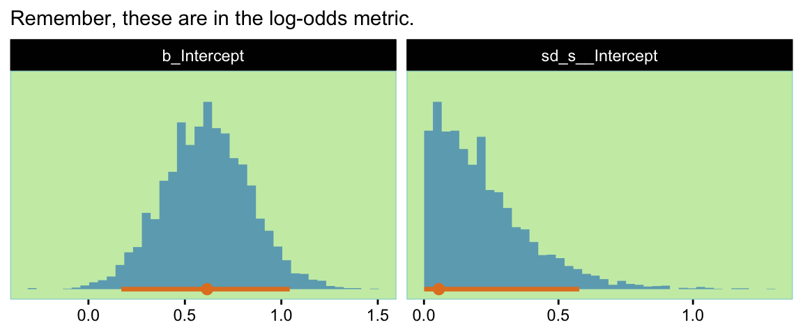
Now redefine our fitted() object, f, which gets pumped into the sample_data() function.
set.seed(13)
f <- fitted(fit13.4,
newdata = tibble(s = 0),
allow_new_levels = TRUE,
summary = FALSE) |>
data.frame() |>
set_names("theta")Here’s what our updated distribution of \(\theta\) values looks like.
f |>
ggplot(aes(x = theta)) +
stat_histinterval(point_interval = mode_hdi, .width = c(0.95, 0.5),
breaks = 40, color = ce[9], fill = ce[3]) +
scale_y_continuous(NULL, breaks = NULL) +
labs(x = expression(theta),
subtitle = "Behold our \"distribution of parameter values consistent\nwith our idealized hypothesis.\"") +
coord_cartesian(xlim = c(0, 1))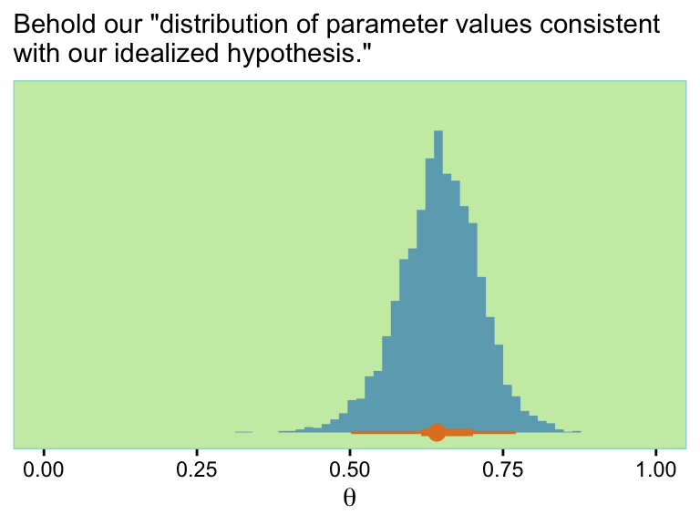
Note the distribution is wider than the previous one. Anyway, now we’re good to go. Here’s our version of the first power analysis for these settings.
# How many subjects should we have?
n_subj <- 14
# How many trials should we have?
n_trial <- 47
# How many simulations would you like?
n_sim <- 100
sim5 <- tibble(seed = 1:n_sim) |>
mutate(data = map(.x = seed, .f = \(seed) sample_data(seed = seed, n_subj = n_subj, n_trial = n_trial))) |>
mutate(hdi = map2(data, seed, fit_then_hdis))Wrangle before summarizing.
sim5 <- sim5 |>
unnest(hdi) |>
mutate(pass_rope_theta = .lower > 0.52 | .upper < 0.48,
pass_width_theta = (.upper - .lower) < 0.2) |>
mutate(exceed_rope_theta_s = .lower_s > 0.52,
below_rope_theta_s = .upper_s < 0.48,
narrow_width_theta_s = (.upper_s - .lower_s) < 0.2) |>
group_by(seed) |>
mutate(pass_rope_theta_s = sum(exceed_rope_theta_s) > 0 & sum(below_rope_theta_s) == 0,
pass_width_theta_s = mean(narrow_width_theta_s) == 1) |>
ungroup()Summarize the results.
sim5 |>
summarise(power_rope_theta = mean(pass_rope_theta),
power_width_theta = mean(pass_width_theta))# A tibble: 1 × 2
power_rope_theta power_width_theta
<dbl> <dbl>
1 1 1sim5 |>
summarise(power_rope_theta_s = mean(pass_rope_theta_s),
power_width_theta_s = mean(pass_width_theta_s))# A tibble: 1 × 2
power_rope_theta_s power_width_theta_s
<dbl> <dbl>
1 0.99 0.21First compute the HDIs for power_rope_theta and power_width_theta.
hdi_of_icdf(name = qbeta,
shape1 = 1 + 100,
shape2 = 1 + n_sim - 100) |>
round(digits = 2) ll ul
0.97 1.00 hdi_of_icdf(name = qbeta,
shape1 = 1 + 100,
shape2 = 1 + n_sim - 100) |>
round(digits = 2) ll ul
0.97 1.00 Second, we compute the HDIs for power_rope_theta_s and power_width_theta_s.
hdi_of_icdf(name = qbeta,
shape1 = 1 + 99,
shape2 = 1 + n_sim - 99) |>
round(digits = 2) ll ul
0.95 1.00 hdi_of_icdf(name = qbeta,
shape1 = 1 + 21,
shape2 = 1 + n_sim - 21) |>
round(digits = 2) ll ul
0.14 0.30 The classical definition of power in NHST assumes a specific value for the parameters without any uncertainty. The classical approach can compute power for different specific parameter values, but the approach does not weigh the different values by their credibility. One consequence is that for the classical approach, retrospective power is extremely uncertain, rendering it virtually useless, because the estimated powers at the two ends of the confidence interval are close to the baseline false alarm rate and \(100\%\) (Gerard, Smith, & Weerakkody, 2009; Nakagawa & Foster, 2004; O’Keefe, 2007; Steidl, Hayes, & Schauber, 1997; Sun, Pan, & Wang, 2011; L. Thomas, 1997). (p. 383)
13.3 Sequential testing and the goal of precision
In classical power analysis, it is assumed that the goal is to reject the null hypothesis. For many researchers, the sine qua non of research is to reject the null hypothesis. The practice of NHST is so deeply institutionalized in scientific journals that it is difficult to get research findings published without showing “significant” results, in the sense of \(p < 0.05\). As a consequence, many researchers will monitor data as they are being collected and stop collecting data only when \(p < 0.05\) (conditionalizing on the current sample size) or when their patience runs out. This practice seems intuitively not to be problematic because the data collected after testing previous data are not affected by the previously collected data. For example, if I flip a coin repeatedly, the probability of heads on the next flip is not affected by whether or not I happened to check whether \(p < 0.05\) on the previous flip.
Unfortunately, that intuition about independence across flips only tells part of story. What’s missing is the realization that the stopping procedure biases which data are sampled, because the procedure stops only when extreme values happen to be randomly sampled…
The remainder of this section shows examples of sequential testing with different decision criteria. We consider decisions by \(p\) values, BFs, HDIs with ROPEs, and precision. We will see that decisions by \(p\) values not only lead to \(100\%\) false alarms (with infinite patience), but also lead to biased estimates that are more extreme than the true value. The two Bayesian methods both can decide to accept the null hypothesis, and therefore do not lead to \(100\%\) false alarms, but both do produce biased estimates because they stop when extreme values are sampled. Stopping when precision is achieved produces accurate estimates. (pp. 383–385, emphasis in the original)
13.3.1 Examples of sequential tests
To start our sequence of simulated coin flips, we’ll set the total number of trials we’d like, n_trial, specify our bias, and set out seed. Like Kruschke did in the text, we’ll do \(\theta = 0.5\) first.
n_trial <- 700
bias <- 0.5
set.seed(13)
coin.5 <- tibble(n = 1:n_trial,
flip = rbinom(n = n_trial, size = 1, prob = bias)) |>
mutate(z = cumsum(flip))
head(coin.5)# A tibble: 6 × 3
n flip z
<int> <int> <int>
1 1 1 1
2 2 0 1
3 3 0 1
4 4 0 1
5 5 1 2
6 6 0 2Here’s a little custom function that will fit frequentist logistic regression models for each combination of n and z and then extract the associated \(p\)-value.
fit_glm <- function(n, z) {
d <- tibble(y = rep(1:0, times = c(z, n - z)))
glm(data = d, y ~ 1, family = binomial(link = "logit")) |>
broom::tidy() |>
select(p.value) |>
pull()
}
# Here's how it works
fit_glm(n = 5, z = 2)[1] 0.6569235Use fit_glm() to compute the \(p\)-values.
coin.5 <- coin.5 |>
mutate(p = map2_dbl(.x = n, .y = z, .f = fit_glm))
head(coin.5)# A tibble: 6 × 4
n flip z p
<int> <int> <int> <dbl>
1 1 1 1 1.000
2 2 0 1 1
3 3 0 1 0.571
4 4 0 1 0.341
5 5 1 2 0.657
6 6 0 2 0.423For the Bayes factors, Kruschke indicated these were computed based on Equation 12.3 from page 344. That equation followed the form
\[ \frac{p(z, N \mid M_\text{alt})}{p(z, N \mid M_\text{null})} = \frac{B (z + a_\text{alt}, N - z + b_\text{alt}) / B (a_\text{alt}, b_\text{alt})}{\theta_\text{null}^z (1 - \theta_\text{null})^{(N - z)}}. \]
To ground ourselves a bit, here’s some of the content from the page that followed the equation:
For a default alternative prior, the beta distribution is supposed to be uninformed, according to particular mathematical criteria. Intuition might suggest that a uniform distribution suits this requirement, that is, \(\operatorname{beta} (\theta \mid 1, 1)\). Instead, some argue that the most appropriate uninformed beta distribution is \(\operatorname{beta}(\theta \mid \epsilon, \epsilon)\), where \(\epsilon\) is a small number approaching zero (p. 344)
The \(\operatorname{Beta}(\epsilon, \epsilon)\), recall, is the Haldane prior. Often times, \(\epsilon = 0.01\). That will be our approach here, too. Let’s make another custom function.
log_bf <- function(n, z, theta) {
# Define epsilon for the Haldane prior
e <- 0.01
# Compute p(d | H_0)
p_d_null <- theta ^ z * (1 - theta) ^ (n - z)
# Compute p(d | H_1)
p_d_alt <- beta(z + e, n - z + e) / beta(e, e)
# Compute BF
bf <- p_d_alt / p_d_null
# Take the log
log(bf)
}Here’s how it works.
log_bf(n = 6, z = 2, theta = bias)[1] -4.152328Now we’ll use it in bulk.
coin.5 <- coin.5 |>
mutate(log_bf = map2_dbl(.x = n, .y = z, .f = \(n, z) log_bf(n = n, z = z, theta = 0.5)))
head(coin.5)# A tibble: 6 × 5
n flip z p log_bf
<int> <int> <int> <dbl> <dbl>
1 1 1 1 1.000 0
2 2 0 1 1 -3.93
3 3 0 1 0.571 -3.93
4 4 0 1 0.341 -3.65
5 5 1 2 0.657 -4.33
6 6 0 2 0.423 -4.15To compute the HDIs for each iteration, we’ll want to use the hdi_of_qbeta() function from Chapters 10 and 12.
hdi_of_qbeta <- function(shape1, shape2) {
hdi_of_icdf(name = qbeta,
shape1 = shape1,
shape2 = shape2) |>
data.frame() |>
set_names("value") |>
mutate(level = c("ll", "ul")) |>
pivot_wider(names_from = level, values_from = value)
}Here’s how it works.
hdi_of_qbeta(3, 3)# A tibble: 1 × 2
ll ul
<dbl> <dbl>
1 0.147 0.853Put it to use.
coin.5 <- coin.5 |>
mutate(hdi = map2(.x = n, .y = z, .f = \(n, z) hdi_of_qbeta(z + 1, n - z + 1))) |>
unnest(hdi) |>
mutate(width = ul - ll)
head(coin.5)# A tibble: 6 × 8
n flip z p log_bf ll ul width
<int> <int> <int> <dbl> <dbl> <dbl> <dbl> <dbl>
1 1 1 1 1.000 0 0.224 1.000 0.776
2 2 0 1 1 -3.93 0.0943 0.906 0.811
3 3 0 1 0.571 -3.93 0.0438 0.772 0.729
4 4 0 1 0.341 -3.65 0.0260 0.670 0.644
5 5 1 2 0.657 -4.33 0.105 0.761 0.656
6 6 0 2 0.423 -4.15 0.0805 0.685 0.604We’re finally ready to define the five subplots for our version of Figure 13.4.
p1 <- coin.5 |>
ggplot(aes(x = n, y = z / n)) +
geom_hline(yintercept = 0.5, color = ce[9]) +
geom_line(color = ce[1]) +
geom_point(color = ce[1], size = 2/3) +
scale_x_continuous(NULL, breaks = 0:7 * 100) +
scale_y_continuous(expand = expansion(mult = 0), limits = c(0, 1))
p2 <- coin.5 |>
ggplot(aes(x = n, y = p)) +
geom_hline(yintercept = 0.05, color = ce[9]) +
geom_line(aes(color = p < 0.05)) +
geom_point(aes(color = p < 0.05),
size = 2/3) +
scale_x_continuous(NULL, breaks = 0:7 * 100) +
scale_y_continuous(expression(italic(p)*"-value"), expand = expansion(mult = 0), limits = c(0, 1)) +
scale_color_manual(values = ce[c(2, 7)], breaks = NULL)
p3 <- coin.5 |>
ggplot(aes(x = n, y = log_bf)) +
geom_hline(yintercept = -1.1, color = ce[9]) +
geom_line(color = ce[7]) +
geom_point(aes(color = log_bf < -1.1 | log_bf > 1.1),
alpha = 1/2, size = 2/3) +
annotate(geom = "text", x = 60, y = -1.5,
label = "accept the null", color = ce[1]) +
scale_x_continuous(NULL, breaks = 0:7 * 100) +
scale_color_manual(values = ce[c(2, 7)], breaks = NULL) +
ylab(expression(log(BF)))
p4 <- coin.5 |>
ggplot(aes(x = n)) +
geom_hline(yintercept = c(0.45, 0.55), color = ce[9]) +
geom_linerange(aes(ymin = ll, ymax = ul,
color = ll > 0.45 & ul < 0.55),
alpha = 1/2) +
scale_x_continuous(NULL, breaks = 0:7 * 100) +
scale_y_continuous("95% HDI", expand = expansion(mult = 0), limits = c(0, 1)) +
scale_color_manual(values = ce[c(2, 7)], breaks = NULL)
p5 <- coin.5 |>
ggplot(aes(x = n, y = width)) +
geom_hline(yintercept = 0.08, color = ce[9]) +
geom_line(aes(color = width < 0.08)) +
geom_point(aes(color = width < 0.08),
alpha = 1/2, size = 2/3) +
scale_x_continuous(NULL, breaks = 0:7 * 100) +
scale_y_continuous("HDI width", expand = expansion(mult = 0), limits = c(0, 1)) +
scale_color_manual(values = ce[c(2, 7)], breaks = NULL)With syntax from the patchwork package, we’ll arrange them one atop another.
(p1 / p2 / p3 / p4 / p5) +
plot_annotation(title = expression(theta==0.5))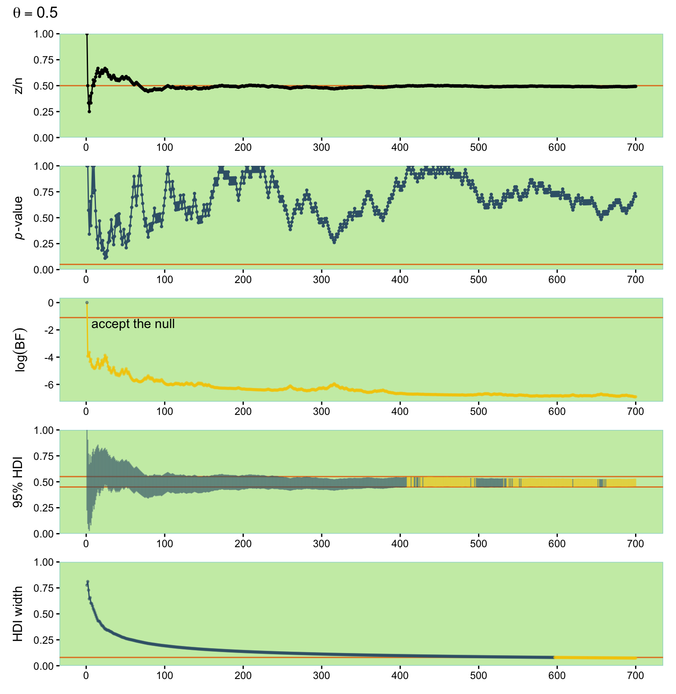
Now let’s compute data of the same form, but based on \(\theta = 0.65\). This time we’ll do all the data wrangling steps in one code block.
n_trial <- 700
bias <- 0.65
set.seed(13)
# n, flip, and z
coin.65 <- tibble(n = 1:n_trial,
flip = rbinom(n = n_trial, size = 1, prob = bias)) |>
mutate(z = cumsum(flip)) |>
# p-values
mutate(p = map2_dbl(.x = n, .y = z, .f = fit_glm)) |>
# log(BF)
mutate(log_bf = map2_dbl(.x = n, .y = z, .f = \(n, z) log_bf(n = n, z = z, theta = 0.5))) |>
# HDIs
mutate(hdi = map2(.x = n, .y = z, .f = \(n, z) hdi_of_qbeta(z + 1, n - z + 1))) |>
unnest(hdi) |>
# HDI width
mutate(width = ul - ll)
head(coin.65)# A tibble: 6 × 8
n flip z p log_bf ll ul width
<int> <int> <int> <dbl> <dbl> <dbl> <dbl> <dbl>
1 1 0 0 1.000 2.22e-16 0.00000000317 0.776 0.776
2 2 1 1 1 -3.93e+ 0 0.0943 0.906 0.811
3 3 1 2 0.571 -3.93e+ 0 0.228 0.956 0.729
4 4 1 3 0.341 -3.65e+ 0 0.330 0.974 0.644
5 5 0 3 0.657 -4.33e+ 0 0.239 0.895 0.656
6 6 1 4 0.423 -4.15e+ 0 0.315 0.919 0.604Here is the code for our version of Figure 13.5.
p1 <- coin.65 |>
ggplot(aes(x = n, y = z / n)) +
geom_hline(yintercept = 0.65, color = ce[9]) +
geom_line(color = ce[1]) +
geom_point(size = 2/3) +
scale_y_continuous(expand = expansion(mult = 0), limits = c(0, 1))
p2 <- coin.65 |>
ggplot(aes(x = n, y = p)) +
geom_hline(yintercept = 0.05, color = ce[9]) +
geom_line(aes(color = p < 0.05)) +
geom_point(aes(color = p < 0.05),
alpha = 1/2, size = 2/3) +
scale_y_continuous(expression(italic(p)*"-value"), expand = expansion(mult = 0), limits = c(0, 1)) +
scale_color_manual(values = ce[c(2, 7)], breaks = NULL)
p3 <- coin.65 |>
ggplot(aes(x = n, y = log_bf)) +
geom_hline(yintercept = c(-1.1, 1.1), color = ce[9]) +
geom_line(color = ce[1]) +
geom_point(aes(color = log_bf < -1.1 | log_bf > 1.1),
alpha = 1/2, size = 2/3) +
annotate(geom = "text", x = 60, y = c(-8, 28),
label = c("accept the null", "reject the null"), color = ce[1]) +
scale_y_continuous(expression(log(BF)), limits = c(-10, 30)) +
scale_color_manual(values = ce[c(2, 7)], breaks = NULL)
p4 <- coin.65 |>
ggplot(aes(x = n)) +
geom_hline(yintercept = c(0.45, 0.55), color = ce[9]) +
geom_linerange(aes(ymin = ll, ymax = ul,
color = ll > 0.55 | ul < 0.45),
alpha = 1/2) +
scale_y_continuous("95% HDI", expand = expansion(mult = 0), limits = c(0, 1)) +
scale_color_manual(values = ce[c(2, 7)], breaks = NULL)
p5 <- coin.65 |>
ggplot(aes(x = n, y = width)) +
geom_hline(yintercept = 0.08, color = ce[9]) +
geom_line(aes(color = width < 0.08)) +
geom_point(aes(color = width < 0.08),
alpha = 1/2, size = 2/3) +
scale_y_continuous("HDI width", expand = expansion(mult = 0), limits = c(0, 1)) +
scale_color_manual(values = ce[c(2, 7)], breaks = NULL)
(p1 / p2 / p3 / p4 / p5) &
scale_x_continuous(NULL, breaks = 0:7 * 100) &
plot_annotation(title = expression(theta==0.65))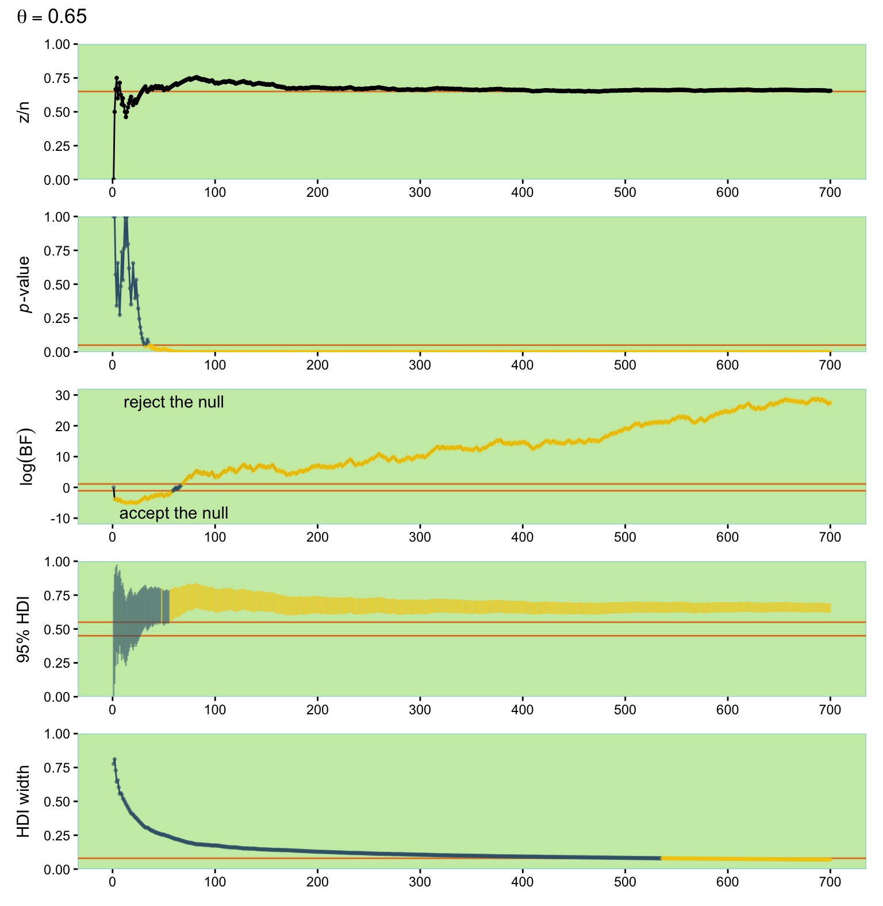
13.3.2 Average behavior of sequential tests
This section is still in the works. In short, I’m not quite sure how to pull off the simulations. If you’ve got the chops, please share your code in my GitHub issue #20.
13.4 Discussion
13.4.1 Power and multiple comparisons
In NHST, the overall \(p\) value for any particular test is increased when the test is considered in the space of all other intended tests…
Bayesian power analysis is not affected by intending multiple tests. In Bayesian analysis, the decision is based on the posterior distribution, which is determined by the data in hand, whether actual or simulated, and not by what other tests are intended. In Bayesian analysis, the probability of achieving a goal, that is the power, is determined only by the data-generating process (which includes the stopping rule) and not by the cloud of counterfactual samples (which includes other tests). (p. 393)
For more thoughts on the multiple comparisons issue, check out this post from Gelman’s blog.
13.4.2 Power: prospective, retrospective, and replication
There are different types of power analysis, depending on the source of the hypothetical distribution over parameter values and the prior used for analyzing the simulated data. The most typical and useful type is prospective power analysis. In prospective power analysis, research is being planned for which there has not yet been any data collected. The hypothetical distribution over parameter values comes from either theory or idealized data or actual data from related research. (p. 393, emphasis in the original)
Prospective is probably the type that comes to mind with you think of “power analyses.”
On the other hand, retrospective power analysis refers to a situation in which we have already collected data from a research project, and we want to determine the power of the research we conducted. In this case, we can use the posterior distribution, derived from the actual data, as the representative parameter values for generating new simulated data. (This is tantamount to a posterior predictive check.) In other words, at a step in the posterior MCMC chain, the parameter values are used to generate simulated data. The simulated data are then analyzed with the same Bayesian model as the actual data, and the posterior from the simulated data is examined for whether or not the goals are achieved. (p. 393, emphasis in the original)
Though researchers sometimes use retrospective power analyses and are sometimes asked to perform them during the peer-review process, they are generally looked down upon within methodological circles. A recent controversy arose on the issue within the surgical literature. To dip your toes into the topic, check out this post by Reaction Watch or this post by Zad Chow or these two (here, here) posts from Gelman’s blog.
Finally, suppose that we have already collected some data, and we want to know the probability that we would achieve our goal if we exactly replicated the experiment. In other words, if we were simply to collect a new batch of data, what is the probability that we would achieve our goal in the replicated study, also taking into account the results of the first set of data? This is the replication power. As with retrospective power analysis, we use the actual posterior derived from the first sample of data as the data generator. But for analysis of the simulated data, we again use the actual posterior from first sample of data, because that is the best-informed prior for the follow-up experiment. An easy way to execute this analysis by MCMC is as follows: Use the actual set of data with a skeptical-audience prior to generate representative parameter values and representative simulated data. Then, concatenate the original data with the novel simulated data and update the original skeptical-audience prior with the enlarged data set. This technique is tantamount to using the posterior of the original data set as the prior for the novel simulated data. (p. 394, emphasis in the original)
13.4.3 Power analysis requires verisimilitude of simulated data
Power analysis is only useful when the simulated data imitate actual data. We generate simulated data from a descriptive model that has uncertainty in its parameter values, but we assume that the model is a reasonably good description of the actual data. If the model is instead a poor description of the actual data, then the simulated data do not imitate actual data, and inferences from the simulated data are not very meaningful. It is advisable, therefore, to check that the simulated data accurately reflect the actual data. (p. 394)
13.4.4 The importance of planning
Conducting a power analysis in advance of collecting data is very important and valuable. Often in real research, a fascinating theory and clever experimental manipulation imply a subtle effect. It can come as a shock to the researcher when power analysis reveals that detecting the subtle effect would take many hundreds of subjects! But the shock of power analysis is far less than the pain of actually running dozens of subjects and finding highly uncertain estimates of the sought-after effect. (p. 395)
For more handy uses of power analyses, keep reading in the text. For more practice with simulation approaches to Bayesian power analyses with brms, check out my blog series on the topic. You might start with the first post, Bayesian power analysis: Part I. Prepare to reject \(H_0\) with simulation. For a critique of the precision approach to Bayesian power analysis, check out the blog post by Richard Morey, Power and precision.
Session info
sessionInfo()R version 4.5.1 (2025-06-13)
Platform: aarch64-apple-darwin20
Running under: macOS Ventura 13.4
Matrix products: default
BLAS: /Library/Frameworks/R.framework/Versions/4.5-arm64/Resources/lib/libRblas.0.dylib
LAPACK: /Library/Frameworks/R.framework/Versions/4.5-arm64/Resources/lib/libRlapack.dylib; LAPACK version 3.12.1
locale:
[1] en_US.UTF-8/en_US.UTF-8/en_US.UTF-8/C/en_US.UTF-8/en_US.UTF-8
time zone: America/Chicago
tzcode source: internal
attached base packages:
[1] stats graphics grDevices utils datasets methods base
other attached packages:
[1] patchwork_1.3.2 tidybayes_3.0.7 brms_2.23.0 Rcpp_1.1.0 fishualize_0.2.3 lubridate_1.9.4 forcats_1.0.1
[8] stringr_1.6.0 dplyr_1.1.4 purrr_1.2.0 readr_2.1.5 tidyr_1.3.1 tibble_3.3.0 ggplot2_4.0.1
[15] tidyverse_2.0.0
loaded via a namespace (and not attached):
[1] Rdpack_2.6.4 gridExtra_2.3 inline_0.3.21 sandwich_3.1-1 rlang_1.1.6
[6] magrittr_2.0.4 multcomp_1.4-29 matrixStats_1.5.0 compiler_4.5.1 loo_2.8.0
[11] reshape2_1.4.4 png_0.1-8 vctrs_0.6.5 pkgconfig_2.0.3 arrayhelpers_1.1-0
[16] fastmap_1.2.0 backports_1.5.0 labeling_0.4.3 threejs_0.3.4 promises_1.3.3
[21] rmarkdown_2.30 markdown_2.0 tzdb_0.5.0 nloptr_2.2.1 xfun_0.53
[26] jsonlite_2.0.0 later_1.4.4 broom_1.0.10 parallel_4.5.1 R6_2.6.1
[31] dygraphs_1.1.1.6 stringi_1.8.7 RColorBrewer_1.1-3 StanHeaders_2.32.10 boot_1.3-31
[36] estimability_1.5.1 rstan_2.32.7 knitr_1.50 zoo_1.8-14 base64enc_0.1-3
[41] bayesplot_1.14.0 httpuv_1.6.16 Matrix_1.7-3 splines_4.5.1 igraph_2.2.0
[46] timechange_0.3.0 tidyselect_1.2.1 rstudioapi_0.17.1 abind_1.4-8 yaml_2.3.10
[51] codetools_0.2-20 miniUI_0.1.2 curl_7.0.0 pkgbuild_1.4.8 plyr_1.8.9
[56] lattice_0.22-7 shiny_1.11.1 withr_3.0.2 bridgesampling_1.1-2 S7_0.2.1
[61] posterior_1.6.1 coda_0.19-4.1 evaluate_1.0.5 survival_3.8-3 RcppParallel_5.1.11-1
[66] ggdist_3.3.3 xts_0.14.1 pillar_1.11.1 tensorA_0.36.2.1 checkmate_2.3.3
[71] DT_0.34.0 stats4_4.5.1 reformulas_0.4.1 shinyjs_2.1.0 distributional_0.5.0
[76] generics_0.1.4 hms_1.1.4 rstantools_2.5.0 scales_1.4.0 minqa_1.2.8
[81] gtools_3.9.5 xtable_1.8-4 glue_1.8.0 emmeans_1.11.2-8 tools_4.5.1
[86] shinystan_2.6.0 lme4_1.1-37 colourpicker_1.3.0 mvtnorm_1.3-3 grid_4.5.1
[91] rbibutils_2.3 QuickJSR_1.8.1 crosstalk_1.2.2 colorspace_2.1-2 nlme_3.1-168
[96] cli_3.6.5 svUnit_1.0.8 Brobdingnag_1.2-9 V8_8.0.1 gtable_0.3.6
[101] digest_0.6.37 TH.data_1.1-4 htmlwidgets_1.6.4 farver_2.1.2 htmltools_0.5.8.1
[106] lifecycle_1.0.4 httr_1.4.7 mime_0.13 rstanarm_2.32.2 shinythemes_1.2.0
[111] MASS_7.3-65
Comments